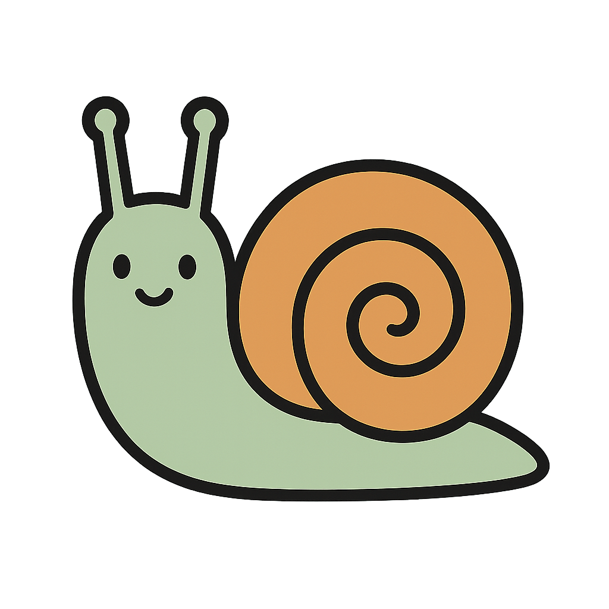
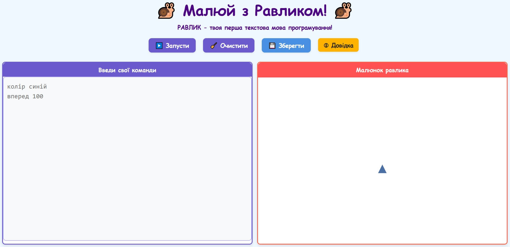
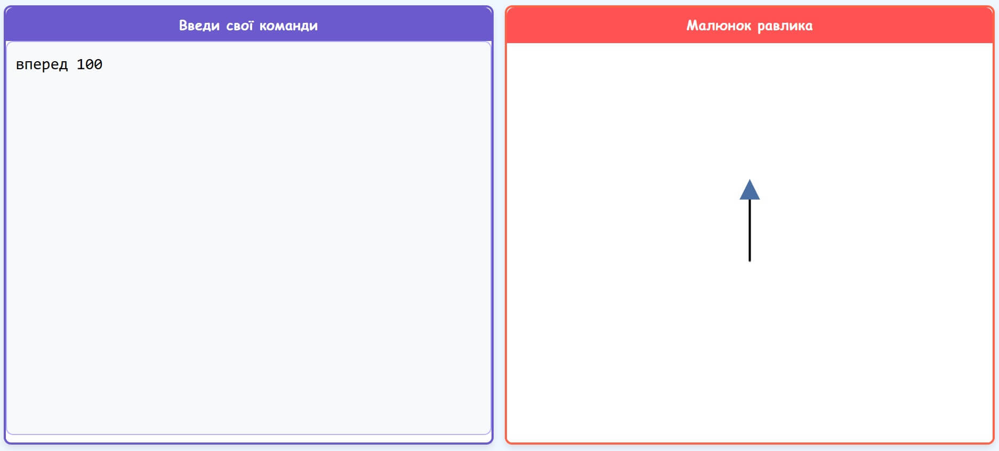
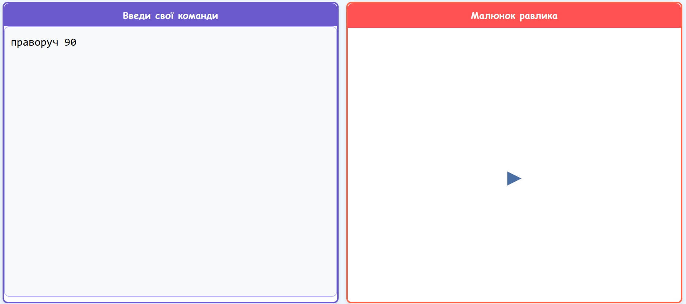
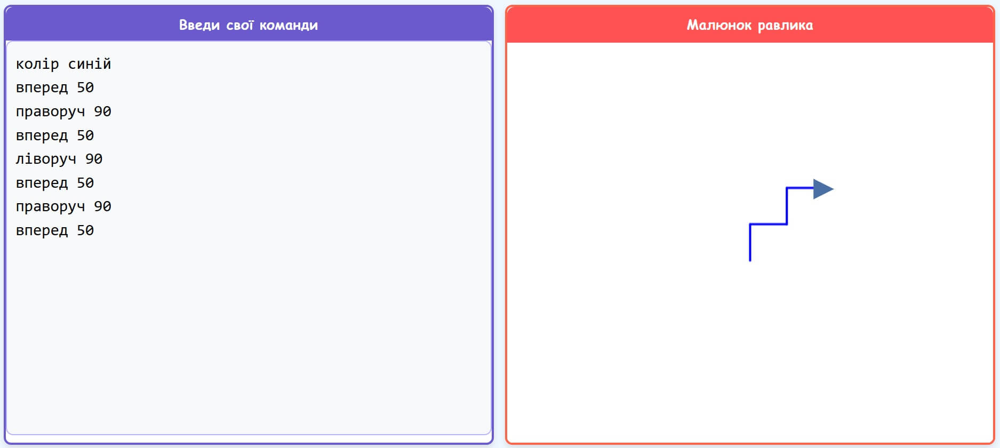
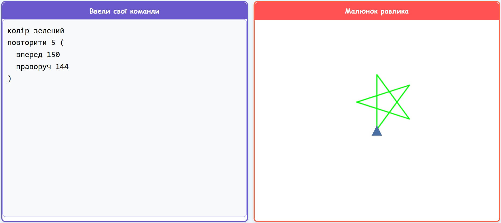
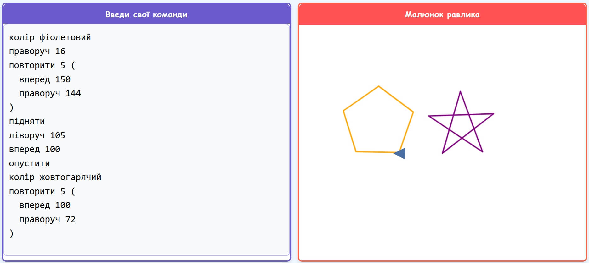

Навчайся програмувати весело та легко, відкриваючи двері у світ технологій!
Урок 1: Знайомство з Равликом 🌟
Привіт, юний програмісте! Сьогодні ми дізнаємося, що таке програмування і чому це так круто! А також познайомимося з Равликом!
Що таке програмування та кодування?
Уяви, що ти хочеш навчити свого робота-помічника (або нашого Равлика!) виконувати різні завдання: прибирати іграшки, малювати картину або навіть танцювати. Щоб робот тебе зрозумів, ти маєш дати йому дуже чіткі інструкції, крок за кроком. Ці інструкції, написані спеціальною мовою, яку розуміє комп'ютер (або Равлик), називаються кодом. А створення цих інструкцій – це кодування або програмування.
Програмування – це ніби розмова з комп'ютером. Ти кажеш йому, що робити, а він слухняно виконує.
Наш друг – Равлик!
Ось він, наш головний герой – Равлик! Він дуже любить малювати, але йому потрібна твоя допомога, щоб знати, куди рухатися і що робити. Твої команди для Равлика – це твій перший код!

Дім Равлика
А це місце, де живе та працює наш герой - онлайн-редактор! Саме тут ми будемо давати нашому Равлику команди, які він буде виконувати та створювати зображення.

Перша команда: вперед
Щоб Равлик почав рухатися, ми скажемо йому команду вперед і додамо число – скільки кроків він має зробити. Наприклад:
вперед 100
Це означає, що Равлик проповзе вперед на 100 маленьких кроків і намалює лінію!

💡 Для чого це потрібно? Чому вчитися рухати Равлика – це важливо?
Вміння давати точні команди – це основа програмування! Коли ти вчиш Равлика рухатися, ти вчишся:
Послідовності дій: Розуміти, що команди виконуються одна за одною. Це як у рецепті: спочатку одне, потім інше.
Точності: Комп'ютер (і Равлик) робить тільки те, що ти йому скажеш. Якщо ти скажеш "вперед 100", він не пройде 101 крок.
Плануванню: Ти заздалегідь думаєш, що хочеш отримати, і які команди для цього потрібні.
Ці навички знадобляться тобі не тільки в програмуванні, а й у математиці, коли ти будеш розв'язувати задачі, або навіть коли будеш складати конструктор LEGO за інструкцією!
🚀 Практичне завдання: Намалюй лінію!
Відкрий редактор Равлика і напиши команду вперед 100. Натисни кнопку "Запустити". Що вийшло?
Підказка: Не забувай натискати "Запустити" після кожної зміни у коді!
Урок 2: Равлик повертається! ↩️↪️
Молодець! Ти вже вмієш рухати Равлика вперед. А тепер навчимо його повертати!
Повторюємо: Рух вперед
Пам'ятаєш команду вперед [число]? Вона допомагає Равлику малювати прямі лінії.
Нові команди: праворуч та ліворуч
Щоб Равлик повернув, ми використовуємо команди:
праворуч 90 – Равлик повернеться праворуч. Число 90 означає прямий кут.
ліворуч 90 – Равлик повернеться ліворуч.
Уяви, що Равлик стоїть і дивиться вгору. Після команди праворуч 90 він дивитиметься направо.

💡 Для чого це потрібно? Навіщо Равлику повороти?
Команди поворотів допомагають нам створювати не просто прямі лінії, а різні фігури! Коли ти вчишся повертати Равлика, ти:
Розвиваєш просторове мислення: Ти уявляєш, як Равлик рухатиметься і куди поверне. Це схоже на те, як ти орієнтуєшся на карті або проходиш лабіринт.
Вчишся геометрії: Ти дізнаєшся про кути (наприклад, прямий кут – 90 градусів, який є у квадрата).
Створюєш складніші інструкції: Ти поєднуєш рух вперед із поворотами, щоб намалювати щось цікавіше, ніж просто лінія.
Це вміння керувати напрямком важливе у створенні ігор (де персонажі рухаються), у робототехніці (де роботи мають об'їжджати перешкоди) і навіть у малюванні на комп'ютері!
Підказка: Число після праворуч або ліворуч – це градуси. 90 – це прямий кут, як у квадрата.
Урок 3: Кольоровий Равлик 🌈
Чудово! Равлик вже вміє ходити і повертати. А чи знаєш ти, що він може малювати різними кольорами?
Повторення вивченого
Давай пригадаємо, як рухати Равлика вперед (вперед [число]) та повертати (праворуч [число], ліворуч [число]).
Нова команда: колір
Щоб змінити колір, яким малює Равлик, ми використовуємо команду колір та назву кольору. Наприклад:
колір синій
Після цієї команди всі наступні лінії Равлик малюватиме синім кольором. Ти можеш використовувати такі кольори: червоний, зелений, синій, жовтий, чорний, жовтогарячий, фіолетовий, рожевий, і навіть веселка!

💡 Для чого це потрібно? Навіщо Равлику кольори?
Кольори роблять наші малюнки яскравішими та цікавішими! Коли ти вчишся використовувати команду колір, ти:
Розвиваєш творчі здібності: Ти можеш експериментувати, поєднувати різні кольори та створювати унікальні малюнки.
Вчишся керувати станом: Команда колір змінює "стан" Равлика. Це як взяти інший фломастер. У програмуванні часто потрібно змінювати різні налаштування.
Робиш програми зрозумілішими: У складних малюнках різні кольори можуть позначати різні частини або об'єкти, роблячи їх легшими для сприйняття.
Дизайнери веб-сайтів використовують кольори, щоб зробити сторінки гарними та зручними. Художники-аніматори – щоб оживити персонажів. Навіть у схемах та графіках кольори допомагають виділити важливу інформацію!
🎨 Практичне завдання: Різнокольорові лінії!
Намалюй три лінії різними кольорами. Наприклад:
колір червоний
вперед 50
колір зелений
вперед 50
колір синій
вперед 50
Що сталося? Равлик змінив напрямок чи просто продовжив малювати поруч?
Підказка: Щоб лінії були окремо, перемісти Равлика або поверни його перед малюванням нової лінії! Наприклад, після першої лінії додай праворуч 90, потім вперед 20 (щоб відступити), а тоді ліворуч 90, щоб Равлик знову дивився в той самий бік, що й на початку, але вже в новому місці. Або використай команди підняти та опустити (про них дізнаєшся пізніше!).
Спробуй намалювати кілька коротких ліній різними кольорами веселки одна під одною або дугами. Для простого варіанту прямих ліній:
колір червоний
вперед 100
праворуч 90 # Повернути, щоб рухатись вниз для наступної лінії
вперед 10 # Відстань між лініями
праворуч 90 # Повернути, щоб малювати вліво (паралельно першій)
колір жовтогарячий
вперед 100
ліворуч 90 # Повернути, щоб рухатись вниз
вперед 10
ліворуч 90 # Повернути, щоб малювати вправо (паралельно попередній)
колір жовтий
вперед 100
# і так далі...
Це може бути непросто, але головне – спробувати! Або просто напиши колір веселка і вперед 100 - подивись, що буде!
Пам'ятай: Команда колір змінює колір для всіх наступних ліній, доки ти не даси нову команду колір.
Урок 4: Повторюємо команди! 🔁
Ти вже справжній майстер! Але іноді нам потрібно робити одне й те саме кілька разів - а це може бути нудно. На щастя, для цього є рішення!
Що таке повторення?
Уяви, що тобі треба стрибнути 4 рази. Ти ж не будеш казати собі: "Стрибни. Стрибни. Стрибни. Стрибни."? Ти скажеш: "Стрибни 4 рази!". У програмуванні так само. Повторення одних і тих самих дій називається циклом.
Команда повторити
Щоб намалювати квадрат, нам потрібно 4 рази зробити дві дії: пройти вперед і повернути праворуч. Замість того, щоб писати їх 4 рази:
Це означає: "Повтори 4 рази те, що написано в дужках: пройди вперед 100 кроків і поверни праворуч на 90 градусів".
Важливо: Зверни увагу на дужки ( та ). Вони показують, які саме команди треба повторювати. І не забувай про пробіл між числом та відкриваючою дужкою, а також між командами всередині!
💡 Для чого це потрібно? Навіщо потрібні цикли?
Команда повторити (цикли) – це одна з найпотужніших ідей у програмуванні! Вона допомагає:
Економити час та зусилля: Замість того, щоб писати багато однакових команд, ти пишеш одну команду повторення. Твій код стає коротшим і зрозумілішим!
Створювати складні візерунки та фігури: Багато красивих малюнків (сніжинки, квіти, орнаменти) створюються саме за допомогою повторення простих елементів.
Автоматизувати завдання: Уяви, що роботу потрібно 100 разів підняти коробку. Замість 100 команд, ти напишеш одну з повторенням!
Цикли використовуються скрізь: в іграх (щоб анімація рухалася плавно), на фабриках (щоб роботи виконували однакові операції), і навіть у природі (зміна пір року – це теж своєрідний цикл!).
🖼️ Практичне завдання: Намалюй квадрат!
Введи команду для малювання квадрата, яку ми розглянули вище. Равлик намалював квадрат?
Чим менші кроки і повороти, і чим більше повторень, тим круглішим буде коло!
Малюємо зірку
Для зірки нам теж знадобиться команда повторити. Для п'ятикутної зірки Равлик має 5 разів намалювати довгу лінію і повернути на особливий кут – 144 градуси.
колір зелений
повторити 5 (
вперед 150 # Довга лінія для променя зірки
праворуч 144
)

💡 Для чого це потрібно? Де ми бачимо кола та зірки, створені за допомогою повторень?
Вміння малювати складні фігури за допомогою повторення простих кроків – це дуже потужно! Ти вчишся:
Абстракції: Ти думаєш не про кожну точку на колі, а про загальний принцип його створення (багато маленьких поворотів).
Розбивати складне на просте: Складна зірка малюється повторенням однієї простої дії: лінія + поворот.
Експериментувати: Змінюючи числа в команді повторити, ти можеш створювати різні види кіл, спіралей, зірок та інших візерунків.
Комп'ютерна графіка, яка використовується в мультфільмах та іграх, часто створює складні об'єкти та ефекти за допомогою схожих принципів. Дизайнери використовують повторювані елементи для створення красивих візерунків на тканинах або шпалерах. Навіть природа любить повторення: подивись на пелюстки квітки або сніжинку!
🌌 Практичне завдання: Намалюй своє зоряне небо!
Спробуй намалювати одне велике коло (місяць) і кілька маленьких зірочок поруч. Можеш змінювати їхні кольори та розміри!
Наприклад, спочатку намалюй жовте коло, а потім, змінивши колір на синій, намалюй зірку. (Поки що ми не вміємо переміщати Равлика без малювання, тому фігури можуть накладатися. Це нормально! Головне – експериментувати з командами. Або... ти вже знаєш, як це зробити з наступного уроку!).
Цікавинка: Змінюючи кількість повторень, довжину кроку та кут повороту в команді повторити, можна створювати безліч різних візерунків та фігур! Спробуй повторити 10 ( вперед 100 праворуч 144 вперед 100 ліворуч 72 ). Що вийде?
Урок 6: Підніми олівець! ✏️🖐️
Іноді нам потрібно, щоб Равлик переповз на нове місце, але не залишав за собою сліду. Для цього є спеціальні команди!
Нові команди: підняти та опустити
Команда підняти наказує Равлику підняти свій чарівний олівець. Коли олівець піднятий, Равлик рухається, але не малює.
Команда опустити наказує Равлику знову опустити олівець. Після неї він знову почне малювати.
Це дуже зручно, якщо ти хочеш намалювати дві фігури в різних місцях екрану!

💡 Для чого це потрібно? Де використовується "переміщення без сліду"?
Можливість керувати тим, коли малювати, а коли ні – дуже важлива. Ти вчишся:
Більш точному контролю: Ти можеш розміщувати елементи малюнка саме там, де потрібно, не з'єднуючи їх випадковими лініями.
Створювати складніші композиції: Намалювати будинок, а потім окремо сонечко поруч, не проводячи лінію між ними.
Ефективності: Замість того, щоб стирати непотрібні лінії, ти просто "вимикаєш" малювання на час переміщення.
У графічних редакторах (наприклад, Paint або Photoshop) ти теж можеш переміщати курсор або об'єкти, не залишаючи сліду. 3D-принтери піднімають свою голівку, коли переходять до друку іншої частини об'єкта. Навіть роботи на фабриках можуть переміщати деталі, не виконуючи при цьому іншої операції.
〰️ Практичне завдання: Переривчаста лінія!
Спробуй намалювати лінію, яка складається з маленьких рисочок:
вперед 30
підняти
вперед 20 # Равлик повзе, але не малює
опустити
вперед 30
підняти
вперед 20
опустити
вперед 30
Тепер, коли ти знаєш команди підняти та опустити, спробуй намалювати квадрат або трикутник пунктирною лінією. Тобі доведеться використовувати ці команди для кожної сторони!
Наприклад, для однієї сторони квадрата пунктиром (довжиною 100, з 3 рисочками):
# Одна сторона квадрата пунктиром
повторити 3 ( # Три рисочки
опустити
вперед 20 # Довжина рисочки
підняти
вперед 10 # Проміжок
)
опустити # Намалювати останню частину, якщо потрібно, щоб загальна довжина була 100.
вперед 10 # (20+10)*3 = 90. Ще 10 для 100.
# Потім поверни праворуч 90 і повтори для інших сторін
# ...або використай ще один цикл `повторити 4 (...)` для всього квадрата!
Це завдання потребує уваги, але ти впораєшся! Подумай, як тобі може допомогти повторення?
Ідея! Використовуй підняти та опустити, щоб намалювати очі та посмішку для сонечка, яке ти міг намалювати на минулому уроці! Або намалюй кілька сніжинок у різних місцях.
Урок 7: Творча майстерня! 🧑🎨💡
Вітаю! Ти пройшов усі основні уроки з Равликом і тепер знаєш багато його секретів! Настав час для справжньої творчості!
Повторення всіх команд
Давай швиденько пригадаємо, що ми вивчили:
вперед [число] - рух вперед
назад [число] - рух назад
праворуч [число], ліворуч [число] - повороти
колір [назва_кольору] - зміна кольору (пам'ятай про веселка!)
повторити [число] ( команди ) - повторення команд
підняти - підняти олівець (не малювати)
опустити - опустити олівець (малювати)
очистити - очистити все полотно
💡 Для чого потрібна творчість у програмуванні?
Програмування – це не лише сухі команди та логіка. Це також величезний простір для творчості! Коли ти створюєш власний малюнок, ти:
Розв'язуєш проблеми по-своєму: Як намалювати саме такий будиночок, який ти уявив? Які команди використати?
Виражаєш себе: Твій малюнок – це твоя ідея, втілена в коді.
Вчишся планувати проекти: Ти думаєш про те, з яких частин складатиметься твій малюнок, і як їх поєднати.
Отримуєш задоволення від результату: Бачити, як твоя ідея оживає на екрані – це дуже круто!
Багато програмістів – це справжні творці! Вони створюють ігри, веб-сайти, мобільні додатки, анімацію, музику та багато іншого. Вміння творчо підходити до завдань, знаходити нестандартні рішення та втілювати свої ідеї – ось що робить програміста справжнім майстром. І "Равлик" – це чудове місце, щоб почати розвивати ці навички!
🌟 Творче завдання: Мій власний малюнок!
А тепер найцікавіше! Використовуючи всі команди, які ти знаєш, намалюй свій власний, унікальний малюнок! Це може бути:
Будиночок із сонечком та квітами.
Космічний корабель серед зірок.
Веселий робот.
Чарівний візерунок або орнамент.
Своє ім'я або ініціали.
Все, що підкаже твоя фантазія!
Не бійся експериментувати з кольорами, формами та повтореннями. Використовуй команди підняти та опустити, щоб розміщувати елементи малюнка там, де тобі потрібно.
Головне – отримуй задоволення! Програмування – це не тільки логіка, а й великий простір для творчості. Равлик чекає на твої шедеври! Якщо щось не виходить – не засмучуйся, спробуй ще раз або попроси допомоги у посібнику.